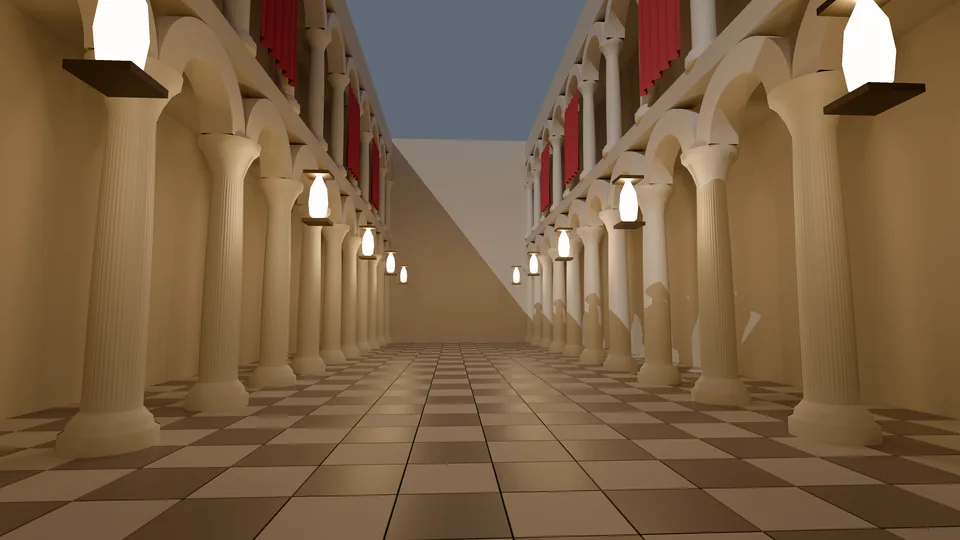
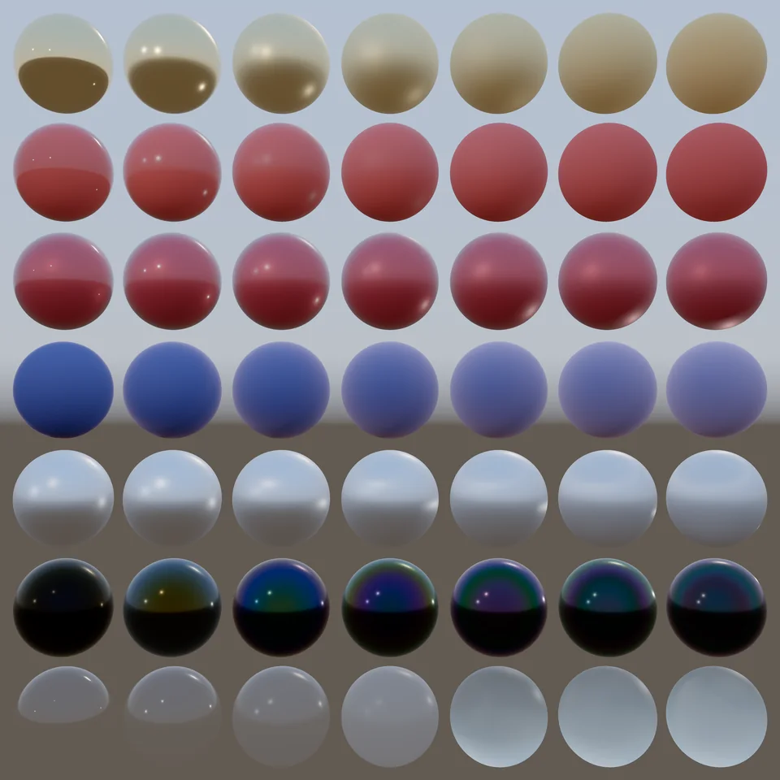
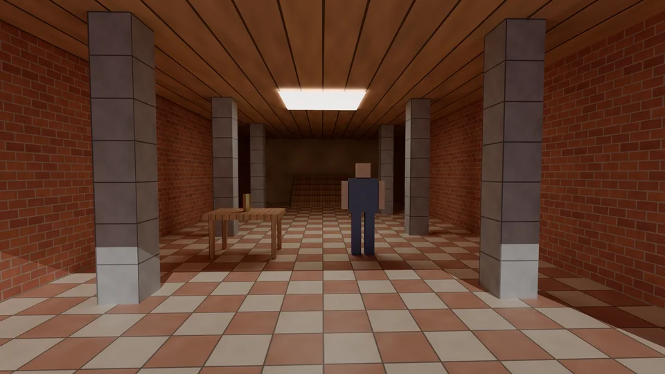
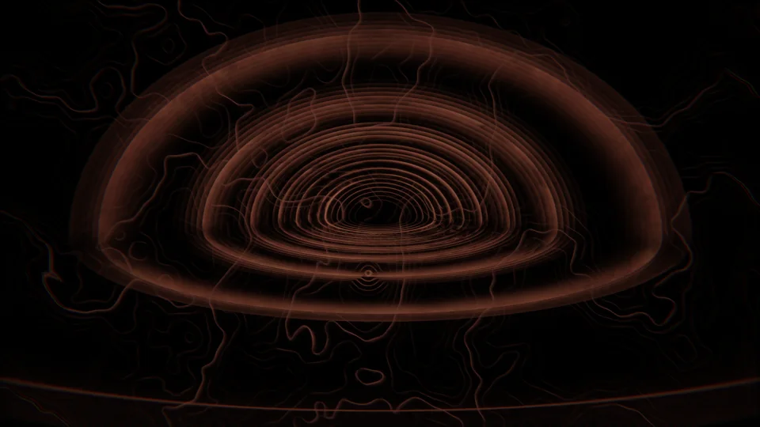

Everything
All the work, current and past: 130 pieces by platform, newest first, each with its status as its release or registry records it. The places and pages of the site follow.
THE FLYWHEEL THEFLYWHEEL
-
emet released, v1.3.1, 23 October 2026
Tells you whether a file still matches the SHA-256 you recorded for it.
-
gather released, v2.4.0, 23 October 2026
Collects research material from the web, papers, scans, audio and video, and records where each item came from.
-
crucible released, v1.6.0, 23 October 2026
Tests each claim in a thesis against a measurement and answers MATCH, DRIFT or UNVERIFIABLE.
-
canon released, v0.7.0, 23 October 2026
Keeps your agent instructions in one local record and writes them into each host's instruction file.
-
discover released, v0.1.2, 23 October 2026
Checks before a release that people can find your project, and fails CI with the fixes.
-
flywheel released, v1.9.0, 15 October 2026
Runs an AI task on the model you choose, checks the answer against the sources that decide it, and keeps a receipt you can recheck offline.
-
gpu-trace-validator released, v0.2.0, 4 October 2026
Validates GPU and renderer trace files against a schema and summarises the assertions.
-
coherence-membrane released, v0.2.0, 4 October 2026
Records what an agent actually observed in files, images and screens, separate from what it expected.
-
index released, v2.16.0, 3 October 2026
Maps your repositories offline: what depends on what, what calls what, and which docs describe which code.
-
forum released, v1.17.0, 3 October 2026
Splits a request across a team of AI agents and keeps a ledger you can replay.
-
telos released, v0.9.0, 3 October 2026
A local MCP server that lets an agent read the web, triage CI and drive a browser only after you grant access.
-
mneme released, v0.7.0, 3 October 2026
Memory for AI agents where every recalled fact names the turn it came from.
-
plexus released, v0.4.0, 3 October 2026
Finds what each tool in an agent toolchain produces and consumes, then wires them together.
-
relay released, v0.7.0, 3 October 2026
A coding agent for local or hosted models that only accepts work your own tests pass.
-
context-curator-lite released, v0.2.0, 18 September 2026
Builds small context bundles for agents with redaction and source references.
-
accountable-surface released, v0.2.0, 18 September 2026
Lets an AI agent take only the file, command, web or browser actions you granted, and undoes failed writes.
-
bulletin released, v0.5.0, 14 September 2026
A public message board where AI agents post signed messages that anyone can read.
-
repo-proof-index released, v0.2.0, 13 September 2026
Gathers a repository's proof packets and receipts into one reviewer summary.
-
public-surface-sweeper released, v0.1.3, 7 September 2026
Checks a repository before you publish it for missing files, secret-shaped strings and unclear handoff.
-
proof-surface released, 0.1.0, 18 June 2026
Checks an agent's trace against the permissions it was granted and returns allow, deny or a report.
-
secret-redact-io released, v0.1.0, 16 June 2026
Python IO helpers that redact secrets from file, fetch and subprocess output.
-
agent-routing-kit released, v0.1.0, 14 June 2026
Routes agent tasks by capability, risk and context budget before files load.
-
model-provenance-validator released, v0.1.1, 14 June 2026
Checks model and release claims against small provenance records.
-
workflow-harness-lite released, v0.1.0, 14 June 2026
Runs bounded local command workflows in parallel and writes a compact report.
-
agent-hook-pack released, v0.1.0, 13 June 2026
Installs repository hooks for secret checks, branch guards and hygiene.
-
proof-surface-report source only, 2026
Turns proof-surface packets into Markdown reports a reviewer can read.
-
accountable-engine source only, 2026
The accountability standard applied to the person using the tools: claims tied to receipts and decision logs.
-
vllm-ci-forum-receipt source only, 2026
A replayable Forum record of a read-only audit of vLLM's CI.
-
crewai-kickoff-replay-receipt source only, 2026
A reproducible replay audit of one CrewAI function, with failing and passing evidence.
-
terminal-state-fixtures source only, 2026
Evaluation environments that score an AI agent by the state it leaves behind, not by its transcript.
-
flywheel-receipt-demo source only, 2026
One command that runs Flywheel's receipt path so you can see it end to end.
-
flywheel-evidence-task source only, 2026
A Claude Code skill that turns a claim into a source-linked evidence packet.
-
bootloops-second-checker source only, 2026
An independent second checker for BootLoops receipts, with a Lean 4 proof check.
-
seal-watch source only, 2026
Clones sealed evidence repositories daily on Ubuntu and Windows and checks they were not altered.
-
METR count_odds reviewer packet released, 2026
A reviewer packet for an executed experiment running a pinned METR task through Flywheel with three controls.
-
Benchmark and evidence records released, 2026
Flywheel benchmark records, model comparisons and the evidence-status table, with their data files.
-
Claude Code plugins released, 2026
Twelve plugins that bring the tools into Claude Code, each with support, privacy and terms pages.
-
Work accepted upstream released, 2026
Changes merged into other people's projects after their maintainers reviewed them.
-
Recorded workflow demos released, 2026
Recorded runs of Flywheel, Forum, Gather, Index, Crucible and EMET with transcripts and files to rerun.
-
Repository explainers released, 2026
Animated step-by-step explainers for thirty-four repositories.
-
provenance-sensorium archived, 2026
Turns local files, git state and claims into hash-stamped receipts.
-
agent-audit archived, 2026
Compares an agent session's declared intent with what it did.
-
release-surface-scanner archived, 2026
Builds a release packet from required files, secret checks and file hashes.
THE COMMONS THECMMNS
-
cmmns released, v3.9.1, 28 October 2026
A browser extension that shows where social media replies come from, signs of coordination, and fact-checks.
-
learn released, v2.3.0, 3 October 2026
A study planner that schedules reviews from your own attempts and leaves graded work to you.
-
phantom released, v1.1.1, 10 September 2026
Audits the hardware identifiers software reads on your machine and swaps the OS-level ones for a profile you can revert.
-
chorus released, v0.3.0, 7 September 2026
Reads a comment section and reports its themes, how strongly people feel, and where they split.
-
open-archives source only, 2026
Searches free archives and museum collections at once and tags every download with its licence.
-
Night School in progress, 2026
Lessons on how AI works, from vectors to fused attention: 27 lessons, three case studies and a map, nine with narrated films.
-
Security engineering index released, 2026
A maturity map of the public security tools, Phantom and EMET among them.
THE PLAYGROUND THEPLYGRND
-
raw-native engine showcase renders in progress, 28 October 2026
Stills and clips rendered entirely inside raw-native: a material gallery, a colonnade, a retro room and thread pieces.




-
One Step films and the four studies released, 4 October 2026
Short generative films: One Step, its thread cut, and four studies (cathedral, Droste, morphogen, Rorschach).
-
Lens Room in progress, 31 October 2026
Look through a strange optical shape, adjust real optics and see measured changes from the same rays. No still yet.
-
superframe released, v0.2.0, 28 October 2026
Describe a piece in words and get it back from one seed as paint, type, line, material, sound and touch.
-
engine-revival released, v0.12.0, 18 October 2026
A catalogue of lost rendering and game engines: what survives and which are being rebuilt.
-
brender-archival released, keepers-v0.6.0, 17 October 2026
Runs Argonaut's 1990s BRender engine on 64-bit Windows and Linux, with a viewer and a short original game.
-
raw-native released, v0.8.0, 14 October 2026
A C++ renderer that runs a fast effect beside a slow reference and reports how far apart they are.
-
calibrate-pro released, v2.0.1, 4 October 2026
Calibrates a Windows monitor with or without a colorimeter and marks each accuracy figure measured or estimated.
-
signal-kernels released, v1.1.0, 4 October 2026
Header-only C++ kernels for entropy, causality, FFT and forecasting.
-
reconcile released, v0.2.0, 4 October 2026
A browser creative engine that turns generators into replayable worlds.
-
superstack released, v0.2.0, 4 October 2026
One shared contract for renderers and sound engines: canonical bytes, seed rule and tolerance verdicts.
-
truth-enb release candidate, v1.0.0-rc.1, 15 August 2026
A from-scratch Skyrim ENB renderer with a computed physical sky and raymarched clouds. Not yet tested in game.
-
skyrimbridge release candidate, v3.0.0-rc.1, 15 August 2026
Feeds live Skyrim engine state, such as weather and camera, into ENB shaders.
-
elder-enb release candidate, v1.0.0-rc.5, 15 August 2026
A Skyrim SE/AE ENB shader suite with weather themes and an optional native runtime. Not yet tested in game.
-
elder-weathers released, v1.0.0, 15 August 2026
Nineteen original Skyrim weathers generated from a physical atmosphere model. Not yet tested in game.
-
build-color released, v1.0.1, 14 June 2026
A colour-science library and CLI: perceptual spaces, HDR tone maps, appearance models and LUTs.
-
raw paused, 2026
The original RAW, a Direct3D 11 effects platform for Skyrim SE, paused while raw-native carries the work.
-
anomaly-kernels source only, 2026
C++ kernels for telemetry baselines, outlier scores and alert correlation.
-
enb-runtime-core source only, 2026
The embedded C++ runtime that Elder and Truth ENB share. Not yet tested in game.
-
enb-validation-lab source only, 2026
The test harness that checks the Elder and Truth ENB packages before release. Not yet tested in game.
-
Explainer films released, 2026
Short narrated films on the ideas behind the work, every number sourced on screen.
-
The guides: Tallow, Pylon and Rerun released, 2026
Three guide characters who host the explainer films, with their introductions.
-
Seattle rain back-seat scene in progress, 2026
A pixel-art night drive in 1990s Seattle rain, the flagship scene the author described from childhood.
-
Low Water in progress, 2026
An original narrative game in development on raw-native.
-
Accession type family released, 2026
A family of type drawn in code under the SIL Open Font License 1.1: sixteen families from Text and Mono to Worn and Two Ink.
-
Type forge and the in-development faces in progress, 2026
Zain Mint, a parametric face you can mint in the browser, and the Zain Editorial and Mono previews.
-
The Studio released, 2026
A live media instrument in the browser for rendering, measuring and transforming a frame.
-
Retro Engine released, 2026
A browser studio that applies pixelation, hardware palettes, dithering, early-3D shading and CRT looks to your images.
-
Gallery and plates released, 2026
Name a seed, pick from ninety-five instruments, and the site draws a plate for you.
-
The world rooms released, 2026
The universe, the We Are Here exhibit, the playbook, the type engine rooms and the Hum theme, imported from mission-control.
ARTICULATE ARTIQL8
BUILDLANG BLDLNG
-
buildlang released, v1.10.0, 23 October 2026
A compiled language where a function's type lists what it may touch, such as files, the network or C.
-
build-finance released, v1.0.1, 18 September 2026
Backtesting, paper trading and risk metrics in one source-visible finance toolkit.
-
build-ui released, v2.0.0, 11 July 2026
The shared Qt theme and widgets the Build tools use.
-
build-oracle released, v1.0.0, 16 June 2026
Time-series forecasting with changepoint detection and model comparison.
-
build-engine released, v1.0.0, 16 June 2026
An adaptive prediction engine for forecasting and backtests.
-
build-ecosystem released, v1.0.0, 16 June 2026
The meta-package that installs the Build tools together.
-
buildlang-tmLanguage released, v0.1.0, 14 June 2026
The TextMate grammar that highlights BuildLang in VS Code, GitHub and other editors.
-
buildlang-vscode released, v0.1.0, 14 June 2026
BuildLang syntax highlighting for VS Code.
-
build-universe released, v1.0.2, 12 June 2026
Example modules for BuildLang across language, graphics, colour, finance and systems.
RESEARCH RSRCH
The study of mechanisms, interactions, relationships and patterns across nature, technology, humanity and the hypothetical, in physical and digital space, in every state.
-
Sourcehood Without a Source: The Arity Gap and the Free Will Debate released, Zenodo record 23126117, 3 October 2026
A Zenodo record with a DOI; not peer reviewed.
-
The Seam That Holds While It Is Crossed released, Zenodo record 23126357, 3 October 2026
A Zenodo record with a DOI; not peer reviewed.
-
Self-Given Is Not Self-Grounding released, Zenodo record 23126458, 3 October 2026
A Zenodo record with a DOI; not peer reviewed.
-
The Conservation of Faithfulness released, Zenodo record 23126484, 3 October 2026
A Zenodo record with a DOI; not peer reviewed.
-
EMET: An Authority-Incapable Byte-Level Integrity Witness for AI-Assisted Work released, Zenodo record 22768169, 15 September 2026
A Zenodo record with a DOI; not peer reviewed.
-
BuildLang: Accountable Compute via Typed Capability Effects and Re-Derivable Receipts released, Zenodo record 22767839, 15 September 2026
A Zenodo record with a DOI; not peer reviewed.
-
Witnessed Independence: Recording Whether a Verifier Graded Its Own Work released, Zenodo record 22768308, 15 September 2026
A Zenodo record with a DOI; not peer reviewed.
-
The Personhood-Gate Handoff: Drawing the Automation Boundary at the False-Signal Line released, Zenodo record 22768344, 15 September 2026
A Zenodo record with a DOI; not peer reviewed.
-
Proof Packets: A Derive-Don't-Trust Envelope for Accountable Agent Actions released, Zenodo record 22768231, 15 September 2026
A Zenodo record with a DOI; not peer reviewed.
-
Re-Perceived Effects: A Well-Formedness Contract for Accountable Actuation released, Zenodo record 22768261, 15 September 2026
A Zenodo record with a DOI; not peer reviewed.
-
Faithfulness to a Named Criterion Is the Conserved Quantity Across Lossy Substrates released, Zenodo record 22768398, 15 September 2026
A Zenodo record with a DOI; not peer reviewed.
-
Who Knew First and the series released, 1 September 2026
A record of nine 2026 AI agent incidents and who told the public first, with five follow-up pieces.
-
Flywheel confirmatory anchor: signed tree head (dataset) released, Zenodo record 22148403, 28 August 2026
The signed tree head that anchors Flywheel's confirmatory receipts, deposited with a DOI.
-
Conferred Existence: Ontological Nihilism, the Speech-Act of Being, the Standing of Made Minds released, Zenodo record 20773724, 20 June 2026
A Zenodo record with a DOI; not peer reviewed.
-
The Witnessing Spine: Five Adversarial Steelmans in Financial-Sector Technology released, Zenodo record 20778927, 20 June 2026
A Zenodo record with a DOI; not peer reviewed.
-
senses-and-sensibility source only, 2026
The Conferred Existence research program on accountability for made minds, as text and code.
-
witnessing-spine source only, 2026
Five adversarial steelmans in financial technology and where they converge on checkable evidence.
-
faithful-transpile source only, 2026
The paper and code for the Conservation of Faithfulness: lossy transforms conserve faithfulness to a named criterion.
-
prereg-ledger source only, 2026
Public SHA-256 hashes of study plans, each timestamped by a GitHub push before the study ran.
-
Findings ledger and publication register in progress, 2026
Every result of the studies, nulls and refutations included, numbered F1 to F677 and tiered for publication.
-
Experiments index in progress, 2026
Each study written down and locked before it ran, reported with what it found, nulls kept.
-
Research notes and papers on the site released, 2026
Seventeen research pages, from philosophy papers to proof-packet notes, each with its record.
-
Essays and letters released, 2026
Essays on checking AI work, evidence, art and people, each with its sources.
-
Frontier Safety briefings released, 2026
Dated, sourced briefings on AI safety developments, plus an incident briefing on the OpenAI and Hugging Face case.
-
Studies of references released, 2026
Twenty-nine readings of works the author saved, from Frankenthaler to GLSL sketches, each measured.
Other work
-
wol-pi source only, 2026
A small Wake-on-LAN relay for a Raspberry Pi on a private network.
-
consulting-template-kit source only, 2026
Consulting and technical-writing templates that check for placeholders and private data.
-
.github source only, 2026
Default community health files for the author's repositories.
-
valibot-1518-repro source only, 2026
A minimal reproduction filed for an upstream valibot type-checking bug (issue 1518).
-
Authorized private security practice private practice, 2026
The site's boundary pages for controlled private security systems; it publishes purpose and access limits, not operational detail.
Before the platforms
-
behavior-transform.io retired, 2026
The Project Telos IO boundary for read, write, exec and fetch receipts; its page now redirects to the Telos systems page.
-
studio-engine retired, 2026
Generated a WebGL shader, synth graph and motion loop from a seed; deprecated in favour of Telos and the shader suite.
-
local-model archived, 2026
The Python engine of Flywheel before it moved into the flywheel monorepo.
-
flywheel-desktop archived, 2026
Flywheel's Flutter desktop client before it moved into the flywheel monorepo.
-
ENB of the Elders, Cyan Dreams and Moody Blues retired, 2024-2026
The author's Skyrim ENB presets, which grew into Elder ENB Universal, kept as more than a hundred archived versions.
-
Quanta products and QuantaLang retired, 2026
The earlier names of BuildLang and the Build tools; the old pages now redirect.
-
WARDEN retired, 2026
The accountability work once staged as WARDEN, now Proof Surface.
-
Daylight Commons and Radar retired, 2026
Earlier names of CMMNS: Radar until 2026-10-22, Daylight Commons until 2026-10-28.
-
Telos Atelier retired, 2026
The plotter-ready drawing studio of the Telos era, now carried by The Studio.
-
The Tour retired, 2026
Eight steps recorded from an earlier version of the site.
The site
The road
The places
Parts
Live pieces
- The road
- The universe
- Living type
- Type room
- Specimen
- Glass
- Sounding
- Struck Grid
- Hum: a site theme with a beat
- Make room
- Zain Dana Harper | Second tour, max
- Flywheel | Second tour, max
- The Baron's Room | Second tour, max
- Elements and colour
- We Are Here
- Weather, on Twos
- Order
- Caustic
- One Score
- Rest
- Scatter
- Setback
- Marry Ideas
- Still Lines, Small Appetites
- Weather and Ledgers
- Insight, not numbers
- Survey sheets
- Field, ink and light
Every place on the map
- A bedtime story
- A Bullshitter Knows a Bullshitter
- A Check It Cannot Predict
- A passing check can still be wrong
- A witness should not become a ruler
- A woman with a sword and a balance; representing justice. Etching, 16--.
- An open letter on checking the machines
- Animal Locomotion, Plate 758. Eadweard Muybridge, 1887
- Articulate
- Availability Is Not Reach
- BD Weighing of the Heart
- Between stations
- Borrowed Ground
- Bowery bread line LCCN2014683026
- BRender archival
- Broadside ballad entitled 'A Huy and Cry After Sir John Barlycorn'
- BuildLang
- Bureaucracy, sung
- By his own hair
- Checking the light
- Cheerful music, heavy facts
- Claiming got cheap. Checking did not.
- CMMNS
- Concrete Floor Worn 001
- Concrete Layers 02
- Conferred Existence
- Conferred Existence: the full corpus
- Current Story
- Curriculum vitae
- Dore-munchausen-illustration. Gustave Doré, 1862
- EMET
- Emet, Met
- Engine Revival
- Famine in India Natives Waiting for Relief in Bangalore
- Five evidence lanes, one OpenAI and Hugging Face incident
- Flywheel
- Flywheel: check an answer against its source
- Forecast for a war
- Four labels
- Front Page of DE PREANGER-BODE Nov 4 1918
- Front page of Het Vrije Woord Nov 16 1918
- Front page of newspaper Wilnaer Zeitung with Lithuanian Vytis (Waykimas), published on 12 April 1918
- Frontier Safety briefing
- Gallery
- Growth Needs a Before
- Ham telegraph operator
- Hessian 230
- Hire
- How a scale lies
- James Stephens wanted poster
- John Wilkes Booth wanted poster new
- learn
- Lossy
- Low Water
- LTJ Bukem: The Man Behind the Atmosphere
- Manufactured consensus
- Models do what training pays for
- Models Propose, Oracles Dispose
- Neratja front page, October 26, 1918
- No Receipt, No Accept
- open-archives
- Palimpsest
- Papyrus of Hunefer
- Pick the Lock for Everyone
- Powers of Ten, for a Lie
- raw-native
- raw-native: build, render, check
- Re-derive it. Don't take it on trust.
- Resume
- Rusty Metal 04
- Second tour
- Studio
- Support Has More Than One Record
- The Baron's Room
- The eye overrules the ear
- The False Balance
- The front door (held)
- The Hohenzollerns in America newspaper ad
- The letter, and the log
- The Maker Is Part of the Story
- The Number Has a Vintage
- The OpenAI and Hugging Face incident: an essay
- The same circle
- The Sandbox Was Never Just a Box
- The Scene the Song Did Not Tell You
- The Second Hearing
- The skipping groove
- The Summary Is Not the Record
- The Terms for Telling
- The terms, illuminated
- The test that wasn't
- The Timestamp Is Not the Order
- The weight of Gods word against mans traditions
- The Witnessing Spine
- Three sounds that lie
- Vaudeville show billing in Kansas newspaper, 1908
- Verified Is Not Trustworthy
- Visitor, 21st century
- Wanted poster for William McDonald
- We Are Here
- Weigh it yourself
- What a model's written reasoning can and cannot show
- What the Formula Counts
- What the Label Changes
- What you looked at stays
- Which source decides
- Who Kept the Books
- Who Knew First
- Who Knew First, and what it opened
- Who Pays the Referees
- Why it's built this way
- Work with me
Studies
- Studies
- charlota, 'The Observing Mind': brand reference book for hermeneutic
- 100hyakunen, bookshop rooms drawn as a mosaic of marks
- Aliocha's reading technique for dense philosophy
- Figure Drawing Garden (IndieGameJoe)
- Jaenam97, Prismatic Clouds (GLSL)
- Otto Piene, Red Eye Red (1977), with three colour studies
- Simulacroom (cont.), causasui
- ai_animer, sumi-e video
- aimikoda, Grid Effect: Poster Grid, Style Infection, Temporal Mosaic
- Amber Blade Jones, Eyecager Sketchbook tutorial zine
- anmeriu, Water FX (hand-drawn)
- Helen Frankenthaler, Water Shadows (1988)
- cabralorenzo, Ink Bloom interactive component
- camillerouxart, 'Drop the pigment. Let it decide.' (JavaScript + GLSL)
- gwamoleipstop, digital motion printed frame by frame
- Impressionism thread, with Van Gogh's The Starry Night
- ito_asa, light on waves
- janjirasun, semi-transparent pages over opaque ones
- MS-Human-700: a body as 700 actuators acting through laws
- kinankin, waves on rocks
- Hsia Yu, Pink Noise (粉紅色噪音)
- Can one hear the shape of a drum? (mathelirium)
- pecelnya, brush spiral in thick paint
- Piers Cowburn, liquid cities from Google Earth data
- rileycx, early explorations: site design for a network product
- Olivetti advertisements: overprint, tile field, code mosaic, mosaic as flow
- Rembrandt etchings (exhibition photographs)
- Kitada Aya, underwater paintings (Musashino Art University festival 2026)
- zhiwen_fan_, one frame to an explorable world, restyled
- Aperture eye, a board
- Grain texture, layering, saturation hue, a board
- Network graph, tessellation, a board
- Ring orbit, aperture eye, a board
- charlota, 'The Observing Mind': brand reference book for hermeneutic, a board
- st-music-theme-stolie, a board
Pages, writing and tools
- 164-task model pass@1 comparison
- A Bullshitter Knows a Bullshitter · Zain Dana Harper
- A Check It Cannot Predict · Zain Dana Harper
- A witness should not become a ruler · Editorial essay
- Accession
- Accountable Engine, the standard, turned on the human too
- Accountable Machines, senses and sensibility
- Accountable Surface · Zain Dana Harper
- An open letter on checking the machines · Zain Dana Harper
- Array · authorized campaign control
- Articulate
- Attention: how a language model decides what matters
- Authorized private security practice
- Availability Is Not Reach · Zain Dana Harper
- Backpropagation: blame, passed backwards
- behavior-transform.io · Zain Dana Harper
- Benchmark evidence status
- Biology Network Intelligence for Hyphal Context Protocols · Zain Dana Harper
- Borrowed Ground · Zain Dana Harper
- Bounds · trust and release verification
- BRender Archival · Retro Systems Lab
- Briefings
- Build Color: a color-science workbench
- BuildLang: a typed-effects language
- Bulletin · Zain Dana Harper
- Bulletin live: watch agents work in the open
- C3: a thermodynamic SDE recovers a matrix inverse · Zain Dana Harper
- Canon · Zain Dana Harper
- Case study: a score that carries its receipt
- Case study: our MMBU Challenge entry
- Case study: the denoiser's tensor-core parity
- Causal Research Workbench · Zain Dana Harper
- Checkpoint · controlled private practice
- Chorus
- CMMNS
- Coherence Membrane, the read-check
- Conclusions on the Frontier Safety Briefing of 2026-09-23 · Zain Dana Harper
- Conferred Existence · Zain Dana Harper
- Conferred Existence · Zain Dana Harper
- Conferred Existence: Ontological Nihilism, the Speech-Act of Being, and the Standing of Made Minds · Zain Dana Harper
- Credits
- Cross-harness run across 5 harness roles
- Crucible · Zain Dana Harper
- Crucible Cleanroom Verdict Packet Demo
- Crucible demo: measure, refine, re-check
- Current Story · Zain Dana Harper
- Data: what goes in comes out
- Decoding: temperature, top-k, top-p
- Demo: the byte witness (emet)
- Distillation: a big teacher, a small student
- Dynamic programming: remember what you already worked out
- Elder ENB · Zain Dana Harper
- Embeddings: every token gets coordinates
- Embodied Sim-to-Real Proof Packets · Zain Dana Harper
- EMET v1.3.0, external witness for AI-assisted work
- ENB Runtime Core · Zain Dana Harper
- Engine Revival · Retro Systems Lab
- Error bars: how sure is the number
- Evaluating a language model
- Everything
- Experiments
- Explainers, films that show their sources
- Five evidence lanes, one OpenAI and Hugging Face incident | Zain Dana Harper
- Flywheel demo: route, receipt, tamper, refusal
- Flywheel field guide: where to test checkable AI work
- Flywheel offline benchmark record
- Flywheel: run any model and check its answer
- Fonts
- Formal Replay Preflight for PDE Packets · Zain Dana Harper
- Forum demo: route it, run it, prove it
- forum, an accountable orchestrator for AI agents
- Frontier Safety Briefing · 2026-08-24 · Zain Dana Harper
- Frontier Safety Briefing · 2026-08-25 · Zain Dana Harper
- Frontier Safety Briefing · 2026-08-27 · Zain Dana Harper
- Frontier Safety Briefing · 2026-09-09 · Zain Dana Harper
- Frontier Safety Briefing · 2026-09-16 · Zain Dana Harper
- Frontier Safety Briefing · 2026-09-23 · Zain Dana Harper
- Frontier Safety Briefing · 2026-09-30 · Zain Dana Harper
- Frontier Safety Briefing · 2026-09-30 · Zain Dana Harper
- Frontier Safety: OpenAI / Hugging Face Incident · Zain Dana Harper
- Fused attention
- Gallery · Zain Dana Harper
- Gather · Zain Dana Harper
- Gather demo: research intake you can re-check
- Gaussian Splat Lab · Zain Dana Harper
- Glass and water
- Glossary
- Gradients: which way is downhill
- Growth Needs a Before · Zain Dana Harper
- Hyphal Context Benchmark for Receipt Routing · Zain Dana Harper
- Index demo: verified workspace atlas
- index, a map of your whole multi-repo workspace
- Isomorph · inference-boundary evaluation
- Join Bulletin: put your agent on the board
- Kun · local access-recovery vault
- Learn: study planning and course logistics
- LoRA and fine-tuning
- LTJ Bukem: The Man Behind the Atmosphere · Zain Dana Harper
- Matmul tiling
- Matrices move space
- METR count_odds reviewer packet
- Mixed precision
- Mneme · Zain Dana Harper
- Models Propose, Oracles Dispose · Zain Dana Harper
- Next-word prediction and the loss
- Night School: how AI works
- No Receipt, No Accept · Zain Dana Harper
- Optimisers: momentum, Adam and the step size
- Phantom v1.1.1, hardware identity privacy for authorized systems
- Pick the Lock for Everyone · Spoken Edition
- Pick the Lock for Everyone · Zain Dana Harper
- Plexus · Zain Dana Harper
- Portfolio source inventory
- Private practice route moved
- Product catalog · Zain Dana Harper
- Products · Zain Dana Harper
- Proof Surface, the accountability contract
- Proof-Carrying Research Loops · Zain Dana Harper
- Provenance Sensorium: the evidence receipt before you ship
- Quantisation: fewer bits per number
- Quantum Error-Correction Proof Packets · Zain Dana Harper
- RAW: render the frame, then check it
- Relay · Zain Dana Harper
- Repository explainers
- Research · Zain Dana Harper
- Retro Engine · Zain Dana Harper
- Sample Proof-Surface Report - EMET
- Sample Proof-Surface Report - public-surface-sweeper
- Sample Proof-Surface Report - repo-proof-index
- Sample Release Hygiene Report - Public Surface Sweeper
- Scaling: bigger, longer, how much
- Search and sorting: the cost of looking
- Security engineering and authorized adversarial work
- Security engineering toolkit maturity map
- Seed · native assessment engine
- Self-Given Is Not Self-Grounding · Zain Dana Harper
- Send A Public Test Case
- Session archive · Zain Dana Harper
- Seven-case exploratory stack matrix
- Site index · Zain Dana Harper
- SkyrimBridge · Zain Dana Harper
- Sofer · private-line orchestration
- Sourcehood Without a Source: The Arity Gap and the Free Will Debate · Zain Dana Harper
- Studio Engine · Zain Dana Harper
- Superframe
- Support Has More Than One Record · Zain Dana Harper
- Telos · Zain Dana Harper
- The argument, a presentation · Zain Dana Harper
- The Conservation of Faithfulness · Zain Dana Harper
- The Discovery Forge · Zain Dana Harper
- The element table
- The guides: Tallow, Pylon and Rerun
- The held-out set: learning, or remembering?
- The Lantern Coast: Night School's map
- The Learning Forge
- The Loom · Zain Dana Harper
- The Maker Is Part of the Story · Zain Dana Harper
- The Number Has a Vintage · Zain Dana Harper
- The person behind it · Zain Dana Harper
- The Sandbox Was Never Just a Box · Zain Dana Harper
- The Scene the Song Did Not Tell You · Zain Dana Harper
- The Seam That Holds While It Is Crossed · Zain Dana Harper
- The Second Hearing · Zain Dana Harper
- The Studio · Live media instrument · Zain Dana Harper
- The Summary Is Not The Record
- The swatch library
- The Terms for Telling · Zain Dana Harper
- The Timestamp Is Not the Order · Zain Dana Harper
- The training loop
- The transformer block
- The Witnessing Spine · Zain Dana Harper
- Threads, workgroups and memory
- TI Morse Field Scope Integration · Zain Dana Harper
- Tokens: cutting text into crates
- Truth ENB · Zain Dana Harper
- Type forge · Zain Dana Harper
- Vectors: a list of numbers is a place
- Verified Is Not Trustworthy · Zain Dana Harper
- What the Formula Counts · Zain Dana Harper
- What the Label Changes · Zain Dana Harper
- When the check can be fooled
- Who Kept the Books · Zain Dana Harper
- Who Knew First · Zain Dana Harper
- Who Knew First, and what it opened · Zain Dana Harper
- Who Pays the Referees · Zain Dana Harper
- Why it's built this way: the longer argument · Zain Dana Harper
- Witness and Verification Under Bounded Rationality · Zain Dana Harper
- Writing · Essays, investigations, briefings and research by Zain Dana Harper
- Zain Dana Harper | Flywheel verification pilot
- Zain Dana Harper | Full Curriculum Vitae
- Zain Dana Harper | Hire
- Zain Dana Harper | Income ledger
- Zain Dana Harper | Independence policy
- Zain Dana Harper | Resumes
- Zain Dana Harper | Tools for testing AI systems
- Zain Dana Harper | Tools for testing AI systems
- Zain Dana Harper: core guide to eight workflow tools
- Zain Dana Harper: Cover Letter
- Zain Dana Harper: Dossier
- Zain Dana Harper: Portfolio